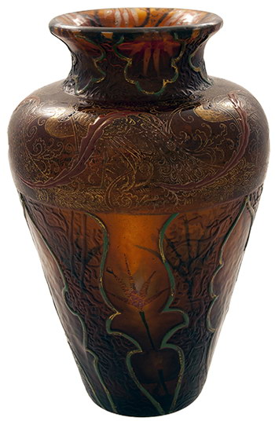

© Muzeul Național Peleș


 printați
printați
+40244 310 918 |
peles.ro@gmail.com |
Vase désiré
Georges Walter descrie, în 1702, în cronica familiei, cum strămoşii săi, care aveau o sticlărie la Soucht, au obţinut autorizaţia Ducelui de Lorena, Leopold I, de a-şi muta manufactura în locul numit „Meiserbach”, din cauza epuizării combustibilului lemnos. Fondatorii noii sticlării se numeau Jean-Martin, Jean-Nicolas şi Etienne Walter, Sébastien Burgun şi Martin Stenger. După încheierea unui contract de închiriere pe 30 de ani cu Ducele de Lorena, ei şi-au amplasat cuptoarele la Meisenthal, pe locul unei vechi sticlării distruse.
Către 1792, după Revoluţia franceză, sticlăria de la Meisenthal, până atunci închiriată, este cumpărată de moştenitorii fondatorilor. În 1800, ea avea 18 asociaţi şi 56 de lucrători, care produceau pahare, sticle de ceas şi geamuri, iar în 1823 îşi schimbă denumirea în „Sticlăriile Meisenthal”.
Începând cu 1824, manufactura de la Meisenthal se va numi „Burgun, Schwerer et Cie”, iar în 1834 va prezenta pentru prima dată, la expoziţia regională de la Metz pahare de cristal, ce s-au remarcat „prin perfecţiunea formei şi precizia tăieturilor transversale”. În 1855, sticlăria de la Meisenthal este elogiată la Expoziţia Universală de la Paris, pentru vasele sale de mari dimensiuni şi pentru opalinele de înaltă calitate şi puritate.
În anii 1860, Nicolas Mathieu Burgun, aflat la conducrea manufacturii, încheie, pentru prima dată, o serie de afaceri cu producătorul de sticlă, ceramică şi mobilă Charles Reinemer Gallé, din Nancy. 1867 este anul în care fiul său, Emile Gallé, îşi va începe ucenicia la Meisenthal. Colaborarea dintre cele două manufacturi va fi din ce în ce mai strânsă, până la începerea războiului franco – german, în 1870 – 1871, când încetează temporar.
CHRISTIAN DÉSIRÉ (1846 – 1907) a condus atelierul de decorare al firmei „Burgun, Schwerer et Cie” din Meisenthal, devenită după 1885 cea mai importantă sticlărie din Lorena germană. Emile Gallé, legat încă din tinereţe de Meisenthal şi prieten al lui Antoine Burgun şi al lui Christian Désiré, încheie cu aceştia, în 1886, un „contract secret”, prin care se stipulau termenii unei colaborări între atelierele sale din Nancy şi cele de la Meisenthal. Ajutorul lui Emile Gallé era esenţial pentru păstrarea preţioşilor decoratori loreni, întrucât acesta din urmă le furniza de lucru în parmanenţă. Calitatea artistică pretinsă de Gallé influenţează producţia atelierelor Meisenthal, fapt confirmat de piesele excelente şi originale realizate sub marca „Verrerie d’art de Lorraine” în aceşti ani. Christian Désiré, care avea un statut independent în cadrul sticlăriei, accede, odată cu semnarea contractului cu Emile Gallé, la poziţia de partener al atelierelor lorene.
În 1889, operele lui Christian Désiré strălucesc alături de cele ale lui Gallé la Expoziţia Universală de la Paris. Acest succes al ambilor creatori a fost benefic pentru colaborarea lor, prin numărul mare de comenzi ce l-au copleşit pe Gallé şi din care o parte au fost executate de atelierele conduse de Christian Désiré.
Cinci ani mai târziu, contractul de colaborare este anulat, datorită unei căderi a pieţei şi a restrângerii numărului de comenzi. Ca urmare, după 1894, la Meisenthal s-au produs anumite modele concepute pentru Nancy, decorate cu motive aproape identice, dar semnate „Vallérysthal”. Probabil, aceasta a fost soluţia propusă de Gallé şi aplicată cu ştirea sa, pentru ca atelierele conduse de Christian Désiré să găsească un debuşeu pe o piaţă tot mai restrânsă. În această perioadă, piesele Meisenthal erau comercializate sub denumirea de „Verrerie d’art de Lorraine Burgun, Schwerer et Cie”, înscris în medalionul cu ciulin, caracteristic Lorenei, gravat cu stiletul, ceea ce permite datarea lor între 1895 şi 1903.
|  | În 1901, „Burgun, Schwerer et Cie” este transformată în societate anonimă. Antoine Burgun, considerat a fi prea francofil şi prea legat de prietenii din Nancy, a fost înlocuit de Emile Wanner, deţinător a şase părţi de capital, ca şi Christian Désiré. Noua conducere a limitat producţia artistică, ceea ce l-a determinat pe Christian Désiré să-şi mute atelierul în propria casă. După 1903, fiul său, Armand i s-a asociat, iar titulatura atelierului a devenit „Christian Désiré şi fiul”. Astfel vor fi înregistrate piesele trimise la expoziţii. |